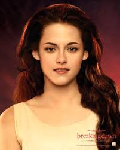
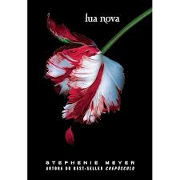

PERSONAGENS

Bella
Edward Cullen
Crepúsculo é o primeiro livro da saga de Stephenie Meyer, que conta a história de Bella Swan, uma adolescente que se muda para Forks e se apaixona por Edward Cullen, um vampiro. Apesar dos perigos dessa relação, eles enfrentam dilemas sobre amor, vida e morte. A história mistura romance, mistério e elementos sobrenaturais, com a tensão do amor proibido entre humana e vampiro, enquanto lutam contra ameaças de outros vampiros.
VOLUMES
- Crepúsculo (2005)
- Eclipse (2007)
- Amanhecer (2008)
- Sol da Meia-Noite (2020)
Stephenie Meyer é uma autora americana, famosa por escrever a saga Crepúsculo. Nascida em 1973, ela teve a ideia para o livro a partir de um sonho em 2003. A série foi um enorme sucesso, sendo adaptada para o cinema, e consolidou Meyer como uma autora de destaque no gênero sobrenatural.